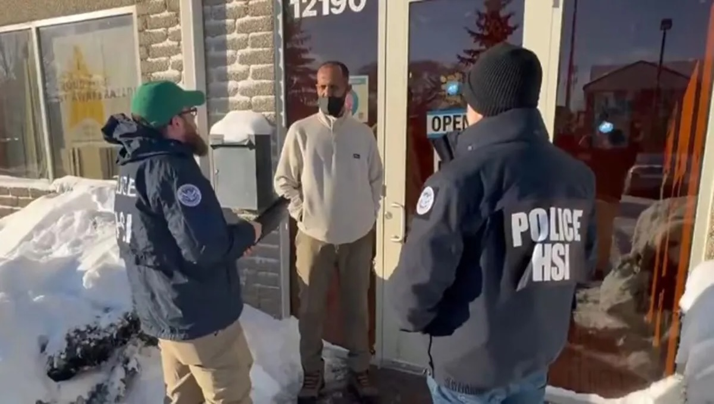
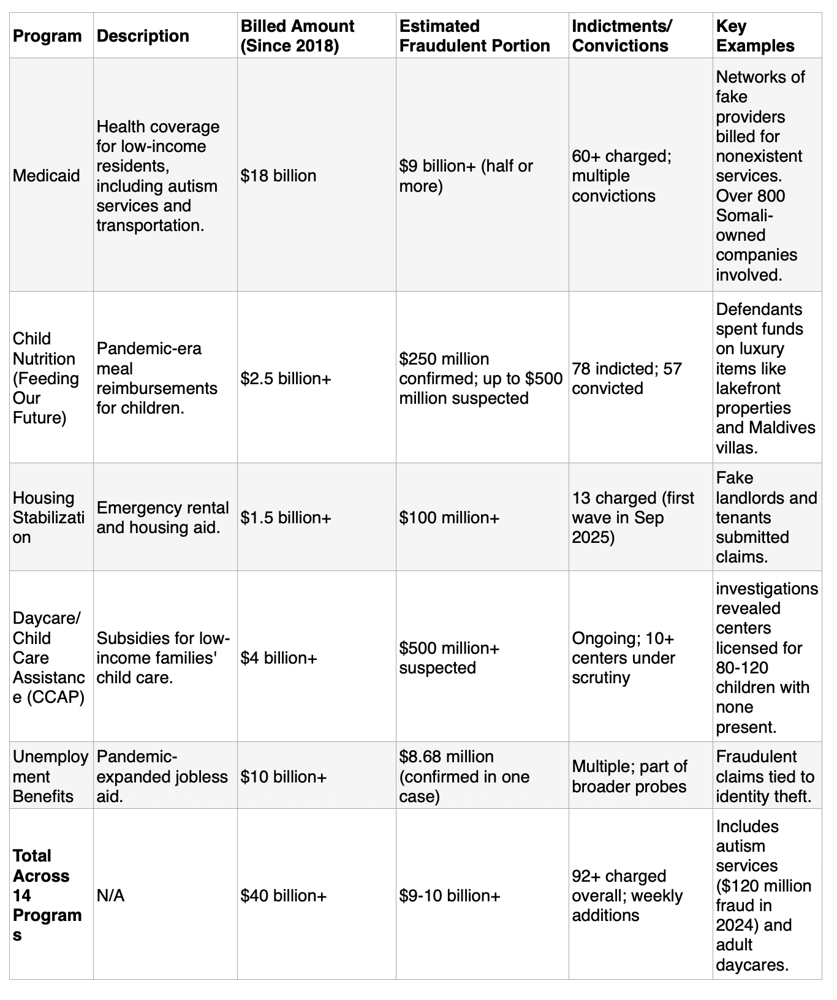

An Analysis of Widespread Fraud in Minnesota

The state of Minnesota has emerged as a focal point for one of the largest public assistance fraud scandals in U.S. history, with federal prosecutors estimating losses exceeding $9 billion since 2018 across multiple state-administered programs.
This scandal, of ”industrial-scale fraud," involves the systematic exploitation of federal and state funds intended for vulnerable populations, including children, low-income families, and immigrants.
This analysis draws on the current available quantitative data from official sources, such as U.S. Attorney's Office indictments and state audits, to break down the scope, mechanisms, and impacts of the fraud. It incorporates qualitative insights from news reports and social media discussions for contextual depth, while addressing historical indicators, many suggest early warnings were ignored.
Scope of the Fraud
The fraud primarily targets federally funded but state-administered programs, many which were expanded during the COVID-19 pandemic to provide “emergency aid”.
Key programs include child nutrition (ex. Feeding Our Future), Medicaid, housing stabilization, non-emergency medical transportation, and daycare subsidies.
Prosecutors describe it as "staggering" and "industrial-scale," involving networks of fake entities billing for nonexistent services, with nonexistent addresses.
As of December 2025, the FBI is "surging" resources to Minnesota, with Director Kash Patel calling the $250 million Feeding Our Future scheme the "tip of the iceberg."
Recent viral videos by independent journalist Nick Shirley exposed allegedly fraudulent daycares receiving millions despite no children present, prompting door-to-door investigations by the Department of Homeland Security. These exposures have amplified public outrage, with social media users decrying the lack of oversight and calling for accountability from state officials.
The Data
To dissect the fraud, we relied on aggregated data from federal indictments, state audits, and prosecutorial statements.
Below is a tabular summary of key programs, estimated losses, and indictments as of late 2025.
Figures are drawn from U.S. Attorney's Office announcements and Minnesota Department of Education reports, reflecting confirmed and suspected amounts.

These figures indicate a fraud rate of 20-50% in affected programs, far exceeding national averages (ex. U.S. Government Accountability Office estimates 5-10% fraud in federal aid nationwide around $135 billion).
The data highlights "micro-NGOs" (small nonprofits) clustered in buildings, like the 22 healthcare companies at one St. Paul address, these is called facilitating layered fraud.
Demographically, 70-80% of defendants are Somali immigrants or descendants, correlating with Minnesota's large Somali diaspora (over 100,000 residents). Critics argue this reflects community vulnerabilities and lax oversight, not inherent criminality, while others point to bloc voting influencing political inaction.
As Minnesota's Somali community tends to vote cohesively, and overwhelmingly supporting Democratic candidates and officials. This creates a reliable voting bloc that is politically influential, especially in Minneapolis and key elections, like helping elect figures like Rep. Ilhan Omar.

Prior Warnings
Data from previous years clearly indicates that fraud was detectable and ongoing, yet programs continued with minimal reforms.
State officials identified red flags as early as July 2019, pre-COVID, including suspicious billing patterns in child nutrition programs. By 2021-2022, the Minnesota Department of Education reported $200 million in fraud from Feeding Our Future alone, yet reimbursements persisted due to federal waivers relaxing verification requirements.
In 2019 early audits flagged overbilling yet no major halts.
In 2020-2021 The Pandemic expansions led to a 242% national increase in benefits fraud cases, with Minnesota's share spiking. Various Whistleblowers have accused Walz of retaliation for raising alarms.
In 2023-2024 around $610 million in total fraud was documented, including $120 million in autism services. Indictments began but programs expanded. Minnesota Attorney General's Office charged $60 million in Medicaid fraud over five years.
Now 2025 losses revised upward to $9 billion from the U.S. Department of Labor initiated reviews in December.
This timeline suggests systemic acceptance despite audits and warnings, political pressures, and weak incentives for oversight allowed fraud to proliferate. Walz's administration claims it cracked down by requesting legislative authority, but it is being accused it of turning a blind eye.
The Implications
Fraud erodes public trust and social norms, diverts funds from legitimate needs, and exacerbates fiscal burdens, potentially spiking property and other taxes.
Nationally, it exemplifies federal-state aid failures, with shared accountability diluting responsibility. Politically, it fuels anti-immigration rhetoric, with JD Vance framing it as a "microcosm of immigration fraud." However, similar schemes occurred nationwide, suggesting structural issues beyond demographics.
Reforms could include mandatory site visits, AI-driven auditing, and stricter eligibility checks. The ongoing FBI probe may uncover more, but addressing root causes requires bipartisan action.
Minnesota's fraud scandal, with losses potentially topping $10 billion+, represents a catastrophic failure of governance and oversight, substantiated by extensive data on indictments and billing anomalies.
Historical evidence from 2019 onward indicates preventable escalation, underscoring the need for proactive reforms. While breaking news highlights dramatic exposures, a data-centric view reveals systemic vulnerabilities that transcend politics, demanding accountability to restore fiscal integrity.
Analysis By The Societal News Team 29DEC2025